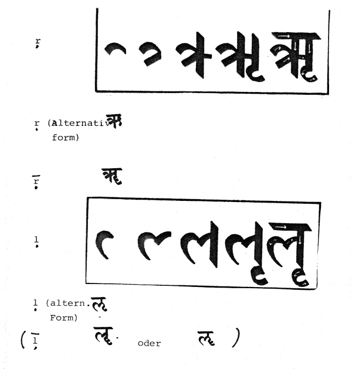
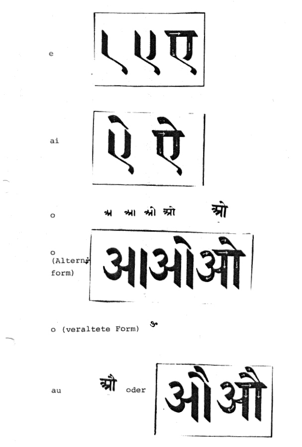

mailto:payer@payer.de
Zitierweise | cite as:
Payer, Alois <1944 - >: Sanskritkurs. -- Devanāgarī = देवनागरी. -- 9. Schriftübung 9. -- Fassung vom 2009-01-27. -- URL: http://www.payer.de/sanskritkurs/schrift09.htm
Erstmals hier publiziert: 2008-11-22
Überarbeitungen: 2009-01-27 [Verbesserungen]
Anlass: Lehrveranstaltungen 1980 - 1984
©opyright: Dieser Text steht der Allgemeinheit zur Verfügung. Eine Verwertung in Publikationen, die über übliche Zitate hinausgeht, bedarf der ausdrücklichen Genehmigung des Verfassers
Dieser Text ist Teil der Abteilung Sanskrit von Tüpfli's Global Village Library
Falls Sie die diakritischen Zeichen nicht dargestellt bekommen, installieren Sie eine Schrift mit Diakritika wie z.B. Tahoma.
Die Devanāgarī-Zeichen sind in Unicode kodiert. Sie benötigen also eine Unicode-Devanāgarī-Schrift.
Innerhalb eines Satzes (einer Vershälfte) findet Worttrennung in der Schrift nur statt, wenn ein Wort mit
schließt und das folgende Wort konsonantisch anlautet. Ebenso in den Fällen, in denen nach den Satzsandhiregeln ein Hiatus zwischen Vokalen entsteht.
Das Ende eines Satzes wird in Prosa mit | (ardhadaṇḍa m.) bezeichnet. In Versen bezeichnet | das Ende der Halbstrophe, das Ende der Strophe bezeichnet || (daṇḍa m.). In Prosa bezeichnet || einen größeren Einschnitt (z.B. das Ende eines Absatzes). Die Verszählung wird zwischen zwei || gesetzt, z.B. ||१||.
Abkürzungszeichen (z.B. in Angaben von Werken) ist °, z.B. पा° = pā(ṇinīye) = "Im Grammatiklehrwerk des Pāṇini".


Beachten Sie, dass a, ā, o, au nch demselben Grundschema geschrieben werden.
A) Schreiben Sie in Devanāgarī:
ṛṣayaḥ ekadṛṣṭiḥ ojas ṛcchati aitareya ṛte auṣadhaṃ ṛgvedaḥ eṣin aiśvaryaṃ oṣṭhapallavaḥ etat ṛṇam aitihāsikā aupamyaṃ ṛtvij evaṃvidha
B) Lesen und transliterieren Sie:
ए इ उ अ ऋ ई ऊ ओ ऐ आ औ ॠ अथ इष् उत् एक इन् ओत् अद् ऐश ऋध् ऊह् एध् ईश् उद्य औम् ऋण ऊढ इह उष् अद् अल् ॐ ओख् ऋच् ऐण उदङ् ऋणम् ईषत् ऊहनम् ऋषभ औषधम् ऐषमस् उपकरणम् ||
Zu Lektion 10